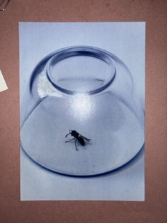
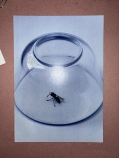
 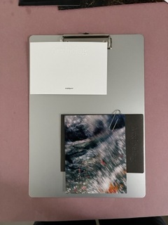
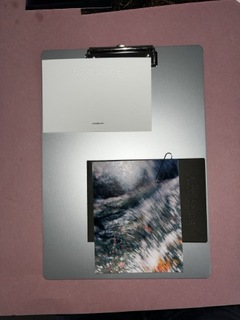
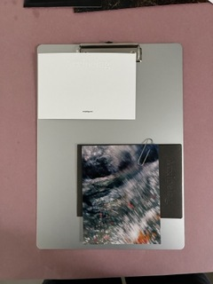
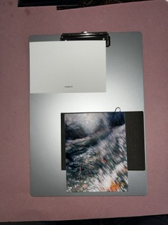


 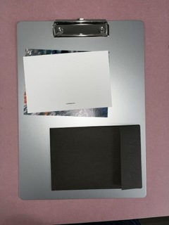
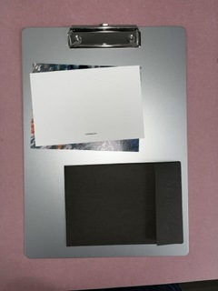


This week was mainly about adapting to the new environment. After an introduction to the studio, I received a briefing on the overall workflow and concept of the Arxipelag magazine project. My first task was to review a large batch of photographs and create an initial sequence for the layout. While examining works from various photographers, I explored how different narratives could be constructed through layout and sequencing, which helped me become familiar with the studio’s working process. I was also introduced to the Dropbox workflow used in the studio, learning how to mark ongoing files properly and ensure that all versions were saved and updated accurately.


I continued editing the photo sequence for Arxipelag. In parallel, I received a branding briefing for a new client, Klein Russo, and began sketching potential logo directions. I analyzed the existing brand identity and the client’s expectations, experimenting with several typographic and geometric variations. Once the drafts were prepared, I brought them to the Creative Director for feedback. The process was somewhat frustrating because the direction seemed predetermined and my ideas weren’t reflected much, but it was still a valuable learning experience. On the 14th, our studio participated in the MAG TO MAG event with the previous issue of the magazine, and I was able to join. It was a meaningful experience to see how independent publications are exchanged and discussed within the community.
While continuing the Arxipelag sequencing work, I began designing web pages using the new Klein Russo logo. Since it was my first time working on a web design task in the studio, I learned through a lot of trial and error. It was interesting to interpret the brand’s tone and manner into a visual digital environment. I also worked on color palette research and created mockups for Instagram posts. From this, I learned how to maintain consistency across a brand’s visual identity. At the same time, I kept working on Arxipelag, mostly receiving instructions from the senior designer and proposing layout ideas based on their direction. I also searched for visual references to support the design process.
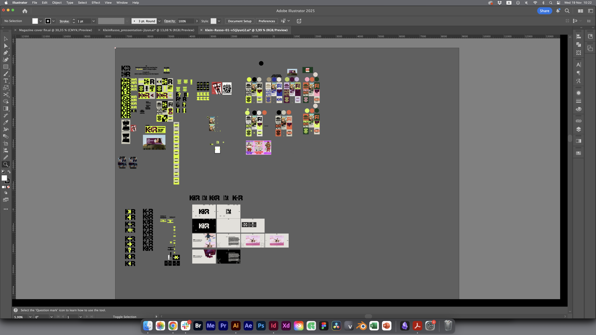

I started gaining a clearer sense of direction for the website design. The screensaver concept I proposed received positive feedback, so I developed that direction further. Because it was Milan Fashion Week, the studio was even busier, and I continually researched visual references to refine Klein Russo’s visual language. I continued working on the Arxipelag magazine in parallel.
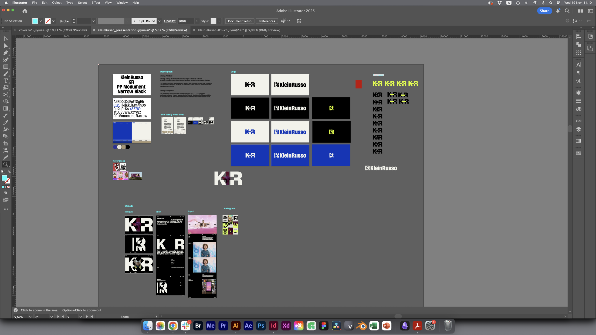
I completed the Klein Russo project. Although my proposal wasn’t selected by the client, the process of developing concepts and sharing ideas was highly valuable. Meanwhile, Arxipelag sequencing work continued. I took a day off on Friday and visited the Venice Biennale over the weekend, which was artistically inspiring.
This week was dedicated to refining the final stages of Arxipelag. With the deadline approaching, I worked on image adjustments, sequencing, color correction, and overall page flow. Around this time, the studio also began an external project for Loro Piana, which made the schedule more intensive.
My mother visited Milan this week, which made it personally meaningful. We finalized the Arxipelag layouts as a team and sent the files to print. The printing was outsourced to [Agpograf Impressors] in Barcelona due to their competitive pricing. I was also assigned to create Instagram promotional images and short videos. The Creative Director shared the concept, and I started with reference research before building visual directions. It was interesting to use the studio’s strong photography style to create promotional visuals with a minimal and refined tone.
 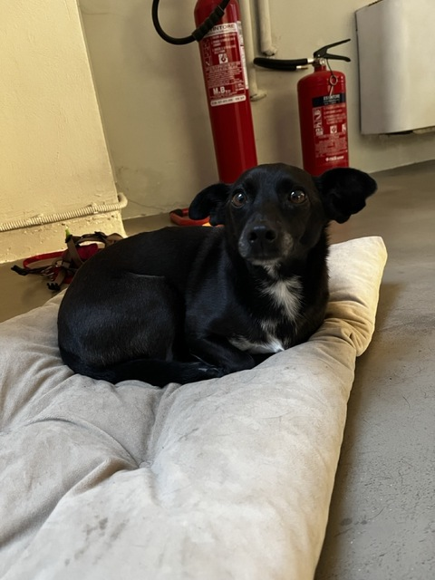
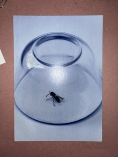
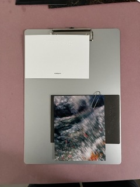
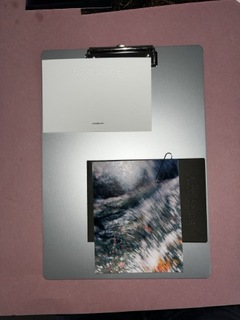
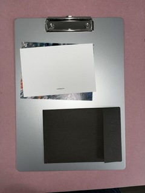
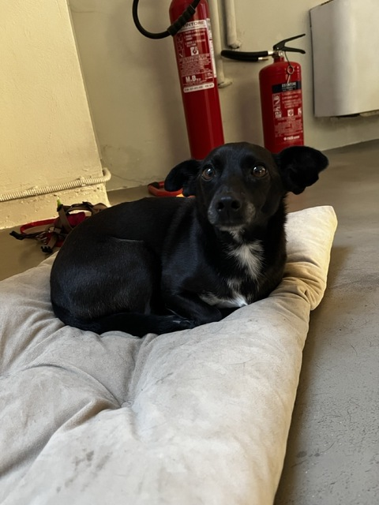
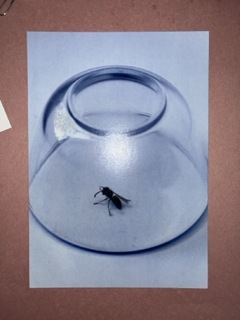
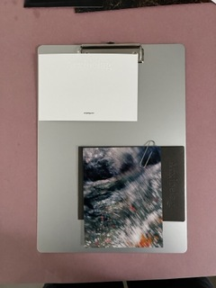
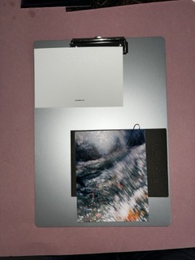
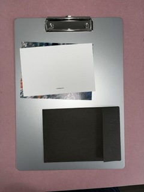

While assisting with the Loro Piana project, I worked on advertising for the Arxipelag magazine. I completed the video-based promotional visuals and assisted in an experimental photoshoot using eggs, which will later be used as a visual identity teaser for the magazine. I experienced both shooting assistance and art direction assistance during this process.
 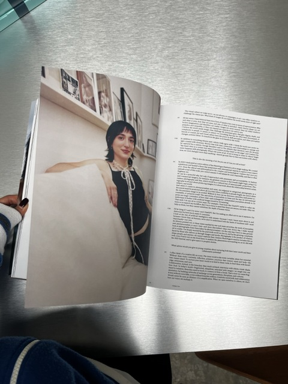
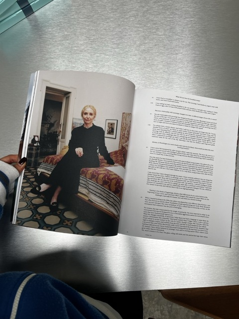
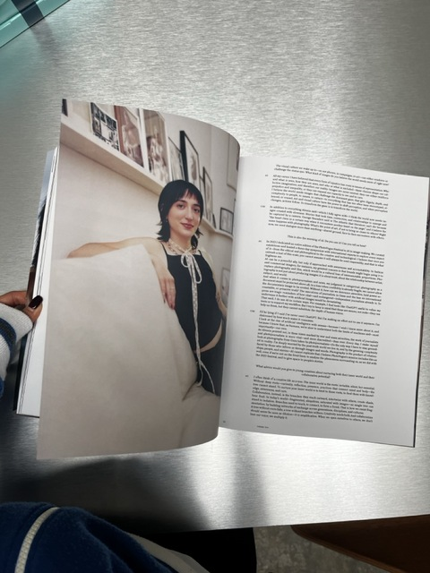
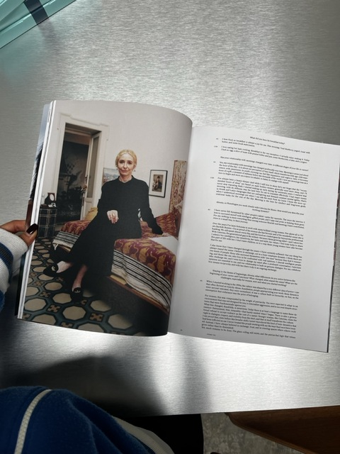


I worked on the Loro Piana interior book together with the team. This involved repeated adjustments to texture, lighting, and page tone to align with the brand’s luxurious identity. Handling such delicate visual details was a valuable experience.

 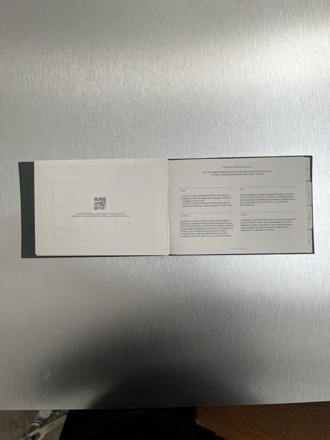
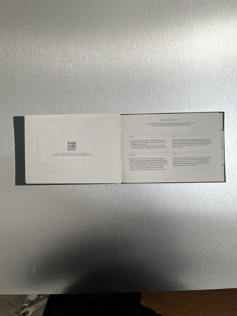
I continued assisting in the production of the Loro Piana interior brochure. My responsibilities included refining the layout of each spread, balancing text and images, and improving the visual flow. Interior-related publications required careful handling of depth, materiality, and spacing, which helped me understand a different facet of editorial design.


I continued assisting with the Loro Piana brochure. Additionally, I received a briefing on redesigning the cover for The Road to Nowhere magazine and began experimenting with new layout directions. From the 6th to the 12th, I took a week off to attend the Glasgow International Assembly Festival. Although I couldn’t attend all the events due to illness, I was still able to participate in several talks and workshops, gaining new perspectives on contemporary design practices.


The studio was quiet because the team was on a business trip to Paris. There weren’t many assignments, so I completed minor tasks and used the remaining time to work on personal projects. I took the opportunity to organize references and conduct research that I couldn’t focus on during busier weeks.
I wrapped up the Loro Piana brochure and brought The Road to Nowhere cover design close to its final stage. During this week, I was also responsible for arranging and overseeing the shipment of the Arxipelag magazine, ensuring that the copies were packed, labeled, and dispatched to the correct recipients on time. Finally, the launch party for Arxipelag Issue 2 was held at Plan C Milano. Seeing the printed pages I had worked on displayed and shared was deeply rewarding. It felt like the entire three months of work came together in that moment, surrounded by the studio team and clients celebrating the results.
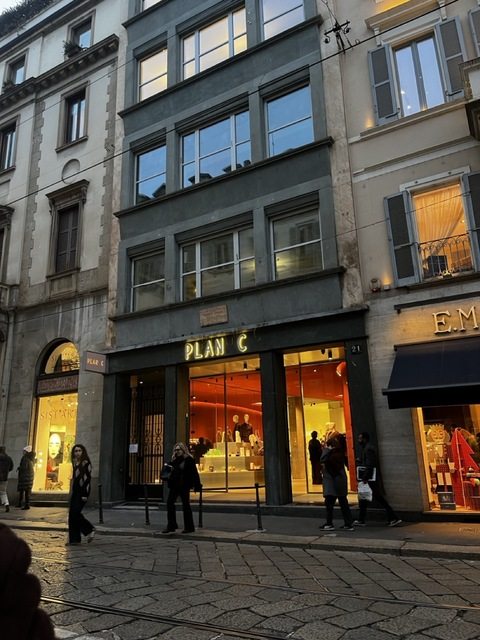 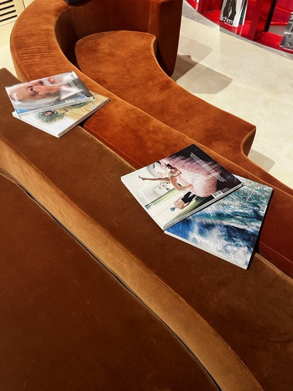
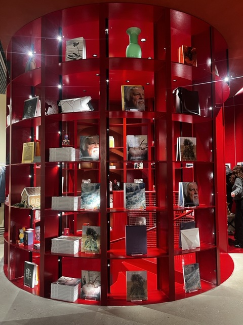
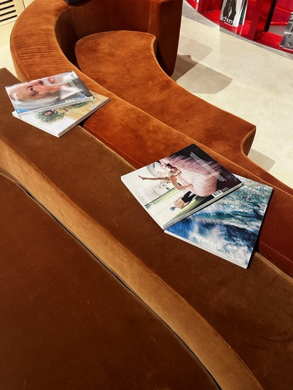
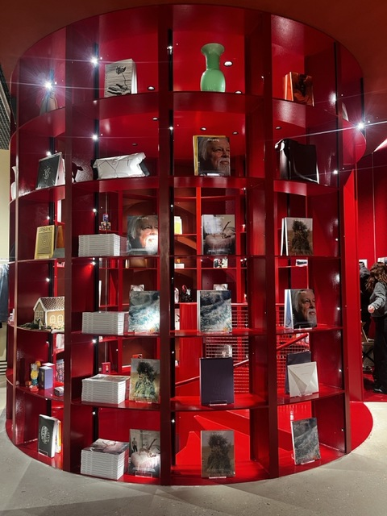

 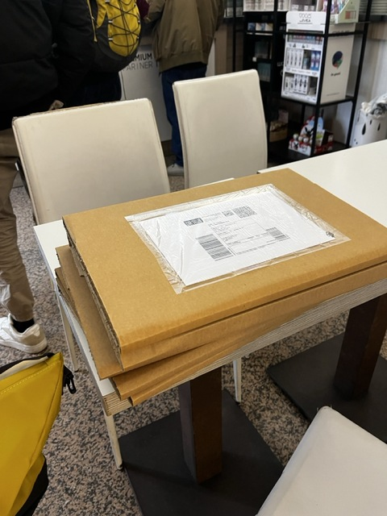
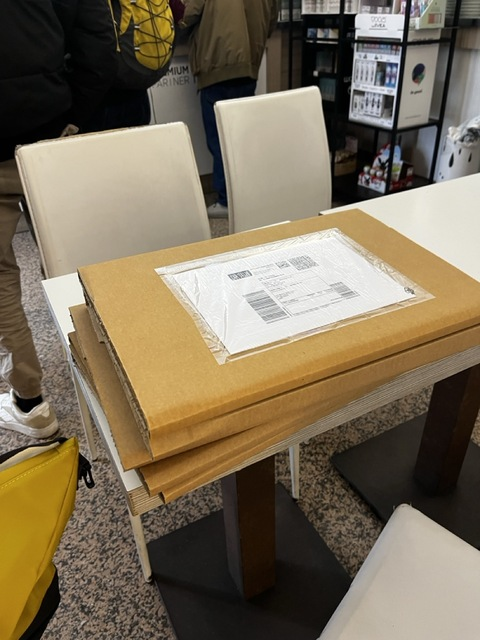